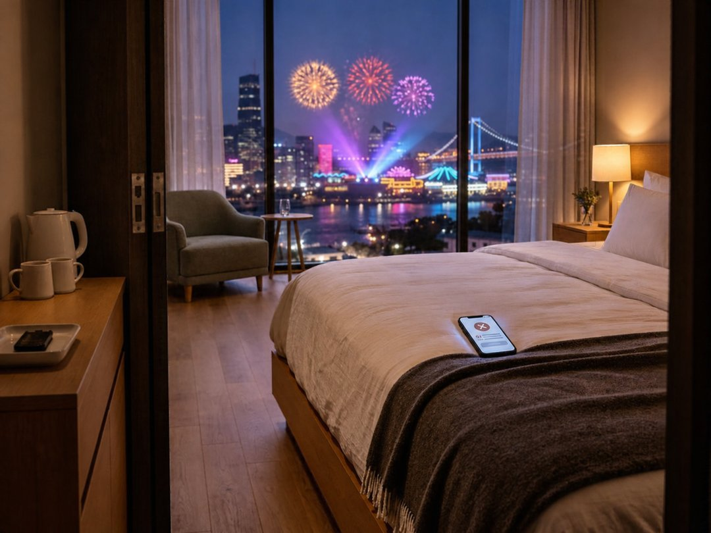

📷 사진 1 자리

▲ 축제 기간 숙소 예약 취소 이미지 · AI 생성 이미지
숙소가 내 예약을 일방적으로 취소하면 숙박 요금의 2배를 물어주게 하는 기준이 추진돼요. 지난 6월 BTS 부산 공연 때 예약을 깨고 몇 배 비싼 값에 방을 다시 판 일이 계기였어요. 다만 모든 취소에 붙는 기준은 아니고 아직 확정 전이에요.
언제 2배를 받나
공정거래위원회가 소비자분쟁해결기준 개정안을 내놓고 12월 3일까지 의견을 받고 있어요. 대상은 지역 축제나 공연, 체육 행사가 열린다는 계획이 발표된 뒤에 숙박업자가 정당한 이유 없이 예약을 취소한 경우예요.
이때 숙소는 소비자가 낸 계약금을 돌려주고 총 숙박 요금의 200%를 따로 배상해야 해요. 1박 10만 원짜리 방이라면 계약금은 그대로 돌려받고 20만 원을 더 받는 셈이에요.
| 구분 | 내용 |
|---|---|
| 적용 시점 | 축제·공연·체육 행사 계획 발표 뒤 |
| 받는 돈 | 계약금 환급 + 총 숙박 요금의 2배 |
| 진행 단계 | 행정예고 12월 3일까지 의견 수렴 |
숙소가 '사정이 있다'고 하면
개정안은 숙소가 예약을 취소해도 되는 경우를 세 가지로 좁혔어요. 그날 숙박시설 전체가 영업을 못 하는 경우, 예약한 객실을 쓸 수 없는 사정이 있고 같은 급 빈방도 없는 경우, 그리고 초과 예약이에요.
초과 예약도 조건이 붙어요. 숙소가 그 사실을 안 뒤 24시간 안에 소비자에게 알리거나 같은 급 대체 숙소를 내줘야 정당한 사유로 인정돼요. 객실에 문제가 있다며 취소해 놓고 그 방에 다른 손님을 받는 것도 안 돼요.
예약이 취소됐다면 취소 연락을 받은 날짜와 숙소가 댄 이유부터 남겨 두세요. 이유가 위 세 가지에 들어가는지, 같은 방이 다시 팔리고 있는지가 분쟁에서 따지는 지점이에요. 상담은 소비자상담센터(1372)에서 받을 수 있어요.
2배면 충분할까
비판도 있어요. 수요가 확실히 몰리는 행사라면 2배를 물어 주고도 더 비싸게 다시 파는 편이 숙소에 이득일 수 있다는 지적이에요. 일방 취소에 '면죄부'를 주는 것 아니냐는 우려도 MBC와 한국경제 보도에 함께 실렸어요.
공정위 관계자는 한국경제에 "사례 조사 결과 취소 후 재판매 시 기존 가격의 두 배 수준을 책정하는 사례가 많았다"고 설명했어요. 이 기준과 별개로 소비자는 민사소송으로 추가 피해 보상을 요구할 수 있다고도 밝혔어요.
소비자분쟁해결기준은 법처럼 강제력이 있는 규정은 아니에요. 분쟁이 생겼을 때 합의나 권고의 잣대로 쓰이고 업체들이 환불 규정을 만들 때 참고하는 기준이에요.
2배라는 숫자보다 눈여겨볼 곳은 예외 조항이에요. 숙소가 '초과 예약'이나 '객실 문제'를 내세우면 2배 배상을 피할 수 있으니, 소비자에게 필요한 건 그 이유가 24시간 안에 왔는지, 대체 숙소 제안이 있었는지 같은 기록이에요.
개정안은 12월 3일까지 의견을 받은 뒤 전원회의 의결 등을 거쳐 확정돼요. 연말 공연이나 내년 축제 숙소를 이미 잡아 뒀다면 예약 확인 문자와 결제 내역을 지우지 말고 두세요.
함께 보면 좋은 이슈